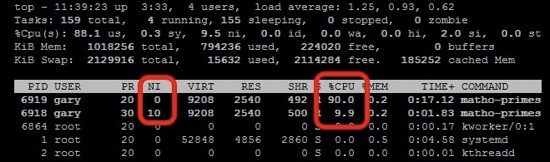

虚拟化：处理器调度 (1)


策略: Round-Robin
假设当前 运行
- 中断后试图切换到下一个线程
- 如果下一个线程正在等待 I/O 返回，继续尝试下一个
- 如果系统所有的线程都不需要 CPU，就调度 idle 进程执行
- 执行
hlt指令进入低功耗模式等待中断
我们的 thread-os.c 实际上实现了 Round-Robin 的调度器
- 中断之间的进程执行称为 “时间片” (time-slicing)

策略：引入优先级

UNIX niceness
- -20 .. 19
- 越 nice，越被不 nice 的人抢占
- -20: 极坏; most favorable to the process
- 19: 极好; least favorable to the process
好人流下了悔恨的泪水
- nice 相差 10, CPU 获得相差 10 倍
- nice 相差 1 大约相差 1.25 倍

- 不妨试一试: nice/renice
Complete Fair Scheduling: 实现
思考题：用什么数据结构维护所有进程的 vruntime?
我们需要什么操作
- 为每个进程维护映射
- 维护进程的 vruntime
- 找到 满足 最小
- 进程创建/退出/睡眠/唤醒时插入/删除
又是有序集合！上一个见到的有序集合：地址空间中的内存映射